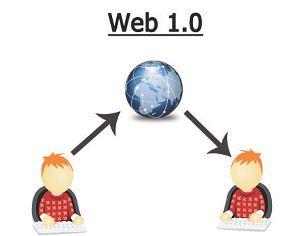

Línea del Tiempo Evolución de la Web
John Ramírez Castillo
Web 1.0

1989. Las páginas no ofrecían funciones interactivas que cambiaban en función del comportamiento de los visitantes del sitio web. En ese momento, los sitios web eran en gran parte informativos.
Web 2.0

2004. Permite la union de grupos globales de personas con intereses similares, ofrecía interacción social
Web 3.0

2005. Está basada en la apertura, descentralización y mayor utilidad para el usuario
Web 4.0

2015. Esta generación está marcada por el incremento en uso de las redes sociales y móviles. Permite experiencias sociales más personalizadas e interactivas.
Regresar al inicio